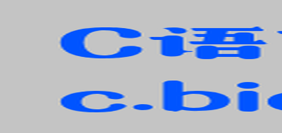
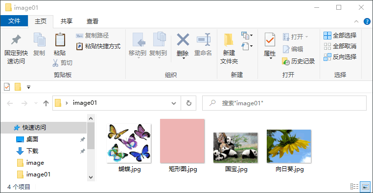
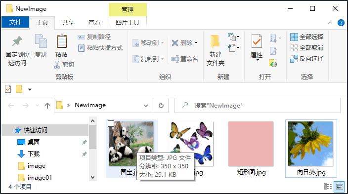

Pillow图像缩放操作
在图像处理过程中经常会遇到缩小或放大图像的情况，Image 类提供的 resize() 方法能够实现任意缩小和放大图像。
resize() 函数的语法格式如下：
注意，resize() 会返回一个新的 image 对象。下面是一组对图像进行放大操的示例：
图1：pillow放大图像
对图片的局部位置进行放大，示例如下：
Image 对象提供了一个 thumbnail() 方法用来生图像的缩略图，该函数的语法格式如下：
使用示例如下：
首先找一些类型相同，但尺寸不一的图片，并把它们放入桌面的 image01 文件夹中。如下所示：
下面开始编写代码：
resize() 函数的语法格式如下：
resize(size, resample=image.BICUBIC, box=None, reducing_gap=None)参数说明：
- size：元组参数 (width,height)，图片缩放后的尺寸；
- resample：可选参数，指图像重采样滤波器，与 thumbnail() 的 resample 参数类似，默认为 Image.BICUBIC；
- box：对指定图片区域进行缩放，box 的参数值是长度为 4 的像素坐标元组，即 (左,上,右,下)。注意，被指定的区域必须在原图的范围内，如果超出范围就会报错。当不传该参数时，默认对整个原图进行缩放；
- reducing_gap：可选参数，浮点参数值，用于优化图片的缩放效果，常用参数值有 3.0 和 5.0。
注意，resize() 会返回一个新的 image 对象。下面是一组对图像进行放大操的示例：
from PIL import Image
im = Image.open("C:/Users/Administrator/Desktop/c-net.png")
try:
#放大图片
image=im.resize((550,260))
#将新图像保存至桌面
image.save("C:/Users/Administrator/Desktop/放大图像.png")
print("查看新图像的尺寸",image.size)
except IOError:
print("放大图像失败")
输出结果：
查看新图像的尺寸 (550, 260)放大后的图片效果。如下所示：
图1：pillow放大图像
对图片的局部位置进行放大，示例如下：
from PIL import Image
im = Image.open("C:/Users/Administrator/Desktop/c-net.png")
try:
#选择放大的局部位置，并选择图片重采样方式
# box四元组指的是像素坐标 (左,上,右,下)
#(0,0,120,180)，表示以原图的左上角为原点，选择宽和高分别是(120,180)的图像区域
image=im.resize((550,260),resample=Image.LANCZOS,box=(0,0,120,180))
image.show()
#保存
image.save("C:/Users/Administrator/Desktop/放大图像.png")
print("查看新图像的尺寸",image.size)
except IOError:
print("放大失败")
图片的放大效果如下所示：

图2：局部放大操作
图2：局部放大操作
创建缩略图
缩略图（thumbnail image）指的是将原图缩小至一个指定大小（size）的图像。通过创建缩略图可以使图像更易于展示和浏览。Image 对象提供了一个 thumbnail() 方法用来生图像的缩略图，该函数的语法格式如下：
thumbnail(size,resample)
- size：元组参数，指的是缩小后的图像大小；
- resample：可选参数，指图像重采样滤波器，有四种过滤方式，分别是 Image.BICUBIC（双立方插值法）、PIL.Image.NEAREST（最近邻插值法）、PIL.Image.BILINEAR（双线性插值法）、PIL.Image.LANCZOS（下采样过滤插值法），默认为 Image.BICUBIC。
使用示例如下：
from PIL import Image
im = Image.open("C:/Users/Administrator/Desktop/c-net.png")
im.thumbnail((150,50))
print("缩略图尺寸",im.size)
#将缩略图保存至桌面
im.save("C:/Users/Administrator/Desktop/th.png")
输出结果：
缩略图尺寸 (118, 50)注意，缩略图的尺寸可能与您指定的尺寸不一致，这是因为 Pillow 会对原图像的长、宽进行等比例缩小，当指定的尺寸不符合图像的尺寸规格时，缩略图就会创建失败， 比如指定的尺寸超出了原图像的尺寸规格。
批量修改图片尺寸
在图像处理过程中，对于某些不需要精细处理的环节，我们往往采用批量处理方法，比如批量转换格式，批量修改尺寸，批量添加水印，批量创建缩略图等，这是一种提升工作效率的有效途径，它避免了单一、重复的操作。通过 Pillow 提供的 Image.resize() 方法可以批量地修改图片尺寸，下面看一组简单的示例。首先找一些类型相同，但尺寸不一的图片，并把它们放入桌面的 image01 文件夹中。如下所示：

图3：待处理的图片
图3：待处理的图片
下面开始编写代码：
# 批量修改图片尺寸
import os
from PIL import Image
#读取图片目录
fileName = os.listdir('C:/Users/Administrator/Desktop/image01/')
print(fileName)
#设定尺寸
width = 350
height = 350
# 如果目录不存在，则创建目录
if not os.path.exists('C:/Users/Administrator/Desktop/NewImage/'):
os.mkdir('C:/Users/Administrator/Desktop/NewImage/')
# 循环读取每一张图片
for img in fileName:
old_pic = Image.open('C:/Users/Administrator/Desktop/image01/' + img)
new_image = old_pic.resize((width, height),Image.BILINEAR)
print (new_image)
new_image.save('C:/Users/Administrator/Desktop/NewImage/'+img)
输出结果如下所示：
['向日葵.jpg', '国宝.jpg', '矩形图.jpg', '蝴蝶.jpg'] <PIL.Image.Image image mode=RGB size=350x350 at 0x2B9E670> <PIL.Image.Image image mode=RGB size=350x350 at 0x31D0C90> <PIL.Image.Image image mode=RGB size=350x350 at 0x2B90DB0> <PIL.Image.Image image mode=RGB size=350x350 at 0x31D0C90>NewImage 目录的内容如下：

图4：处理完成的图片
图4：处理完成的图片
关注公众号「站长严长生」，在手机上阅读所有教程，随时随地都能学习。内含一款搜索神器，免费下载全网书籍和视频。

微信扫码关注公众号